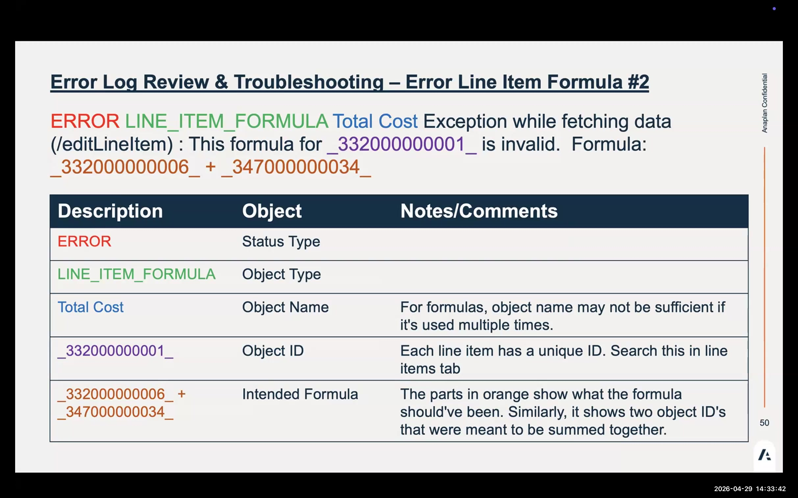
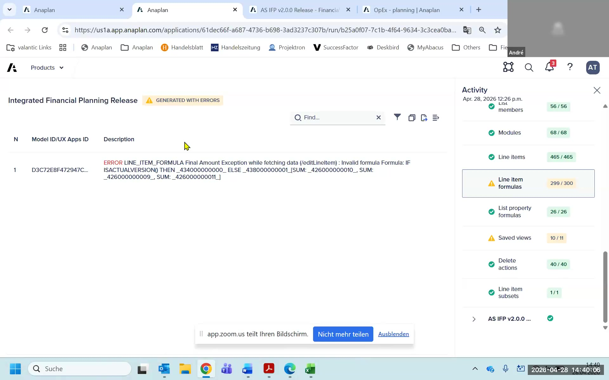
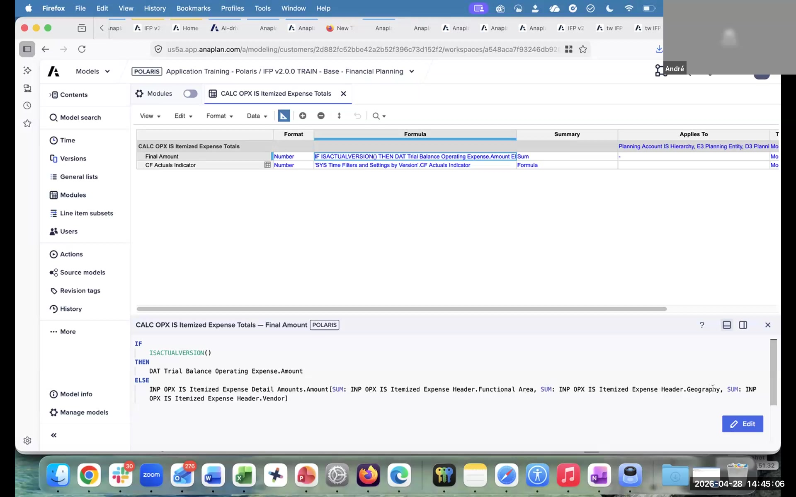
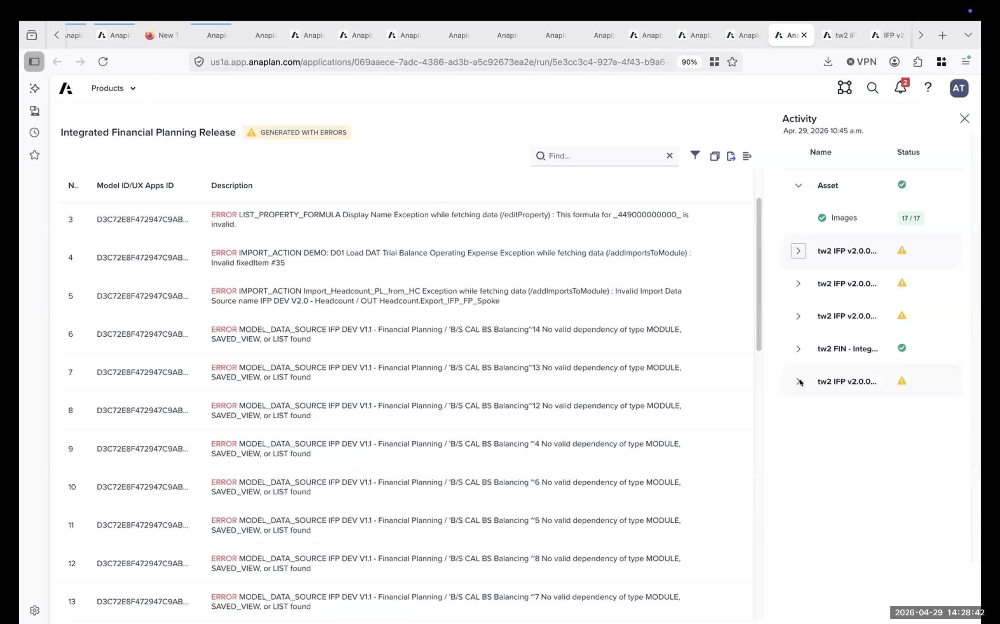

Error Log Review
How to read, categorize, and resolve generation error logs
Error Logs — What They Are
Error logs are generated by the App Framework after model generation. They list formula and configuration issues that arose when the generated model differs from the base model template. The error log is accessible from the bottom-right of the App Framework overview page and can be exported to Excel.
Error logs are new content introduced in IFP 2.0 — prior IFP versions did not have this systematic error reporting. Learning to read them efficiently is a key practitioner skill.
Error Types Reference
| Error Type | What It Means | Action |
|---|---|---|
LINE_ITEM_FORMULA | A formula references a line item that doesn't exist or was renamed in the generated model — often due to hierarchy renaming or configuration choices | Find the line item by code (underscore prefix), compare formula to base model, fix or copy-adjust from base |
LIST_PROPERTY_FORMULA | Formula references a list property that doesn't exist or was renamed | Find the line item by code, compare formula to base model, update the list property reference |
IMPORT_ACTION | An import action references a source module or list that changed | Update the import mapping in the affected model |
MODEL_DATA_SOURCE | A data source connection is broken (ADO pipeline reference) | Re-establish the connection in ADO or update the data source reference |
How to Find a Formula Error
The most common error type is LINE_ITEM_FORMULA. Here is the diagnostic workflow:
"We generally tell you the line item with an underscore at the beginning — that's the error line item code. Go into the model, search for that code, and it takes you to the exact item."
Open Error Log
From the App Framework overview, click the error log panel (bottom-right). Filter to formula errors only. If more than 10 errors, export to Excel first.
Note the Code
Each error includes a line item code in the format _LINEITEMNAMEEXCEPTION (underscore prefix). This code is unique — use it for the model search, not the display name.
Find the Affected Line Item
Go to the affected model (the error log tells you which model). Open Line Items. Search for the code with the underscore prefix. The search result takes you directly to the module and line item.
Compare to Base Model
Open the base model (your facilitator will provide access). Find the same line item. Compare the generated formula to the base model formula. Identify what changed: hierarchy rename, geography removal, dimension change.
Fix or Copy-Adjust
Option A: Fix the formula directly — update references to match your configuration. Option B: Copy the base model formula to your model and adjust dimension references. Option B is safer and faster for most LINE_ITEM_FORMULA errors.
Validate
After fixing, check if the formula resolves (no red formula error indicator). Return to the error log and mark the error resolved. Proceed to the next error.
Escalate if Stuck
If the error appears to be a platform-level issue (not caused by your configuration), log the error code and contact Anaplan support. Do not spend time on platform errors during a delivery engagement.

The 90% Rule
Each customer configuration will produce a different set of errors. The goal is not zero errors before proceeding — it's to get from 0% to 90% quickly. Categorize errors, fix the resolvable ones systematically, and log the remaining ones as a known-issues list. "That last 10% is what you work through methodically" — not a sign that the project is broken.
Error Log Lab
- 1From the App Framework, open the error log. Export to Excel if you have more than 10 errors.
- 2Create a simple table: Error Code | Error Type | Model | Root Cause | Action
- 3For each error, categorize it as:
LINE_ITEM_FORMULA,LIST_PROPERTY_FORMULA,IMPORT_ACTION, orMODEL_DATA_SOURCE. - 4Pick the first
LINE_ITEM_FORMULAerror. Note the code (underscore prefix). - 5Go to the affected model. Search for the code in Line Items. Confirm you find the correct line item.
- 6Open the line item in blueprint. Record the current (broken) formula.
- 7Open the base model. Find the same line item. Record the base model formula.
- 8Compare the two formulas. Identify what reference changed (hierarchy rename? geography? dimension?).
- 9Fix the formula in your model OR copy-adjust from the base model. Confirm it resolves.
- 10Return to the error log. How many errors remain? Which errors are safe to leave for now?



Debrief Questions
- Which errors are safe to leave for now? Which must be fixed before testing?
- If a customer asks "is the model ready to use?" and you have 8 errors in the log — what do you say?
- When do you escalate an error to Anaplan support vs. fix it yourself?
- How would you document your error resolution approach for the next consultant on this project?